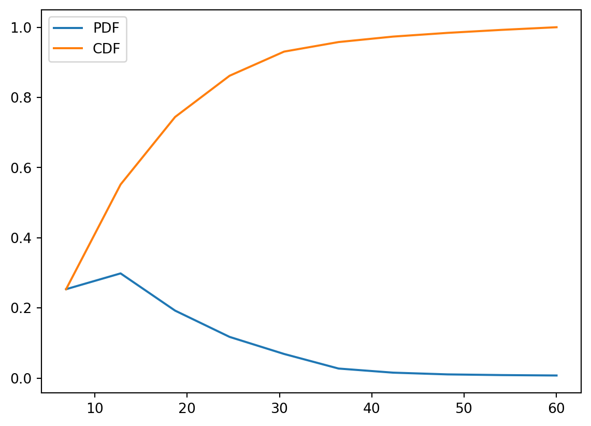

In this blog, I will cover random variable, types of random variable, probability density function (PDF), cumulative density function (CDF), relation between PDF and CDF. At the end, I will also plot PDF and CDF for Capital Bikeshare trip duration under 60 minutes for both type of user- Member and Casual.
Random Variable
A random variable is a variable whose possible values are numerical outcomes of a random phenomenon in a sample space. For example, if we roll two fair dice at a time the probability of having a sum of 2 {P(X=2)} is 1/36 since it can only occur when there is 1 on both dices. Similarly the probability of having a sum of 6 {P(X=6)} is 5/36 since we can have a sum of 6 in the following events- {1,5}, {2,4}, {3,3}, {4,2}, {5,1} and the total number of possible events is 36.
Types of Random Variable
There are two types of random variable-
i) Discrete Random Variable
Discrete Random Variables can have a finite number of distinct values. For example, the number of students present in a class, the number obtained from a dice throw, etc. The probability function for Discrete Random Variable is PMF (Probability Mass Function).
ii) Continuous Random Variable
Continuous Random Variables can take on an infinite number of values such as the weight of the students in class room. The probability function for continuous random variable is PDF.
Probability Distributions
Probabilities assigned to various outcomes in the sample space S, in turn, determine probabilities associated with the values of any particular random variable defined on S.
Probability Mass Function (PMF) is used for discrete random variables and it describes how the total probability is distributed among all the possible range values of the Random Variable X. For example, the probability mass function of rolling a dice is as follows-
x
0
1
2
3
4
5
6
p(x)
1/6
1/6
1/6
1/6
1/6
1/6
1/6
Probability Density Function (PDF) is used for continuous random variables and it defines the probability function representing the density of a continuous random variable lying between a specific range of values. PDF satisfies the following-
i. f(x) \(\geq\) 0, for all x \(\epsilon\)R
ii. f is piecewise continuous
iii. \(\int_{-\infty}^{\infty}\) f(x) = 1
For a given limit of a to b, the PDF of a continuous random variable will be, \[P(a\leq x \leq b)= \int_{a}^{b} f(x) dx\]
Cumulative Density Function (CDF)
The Cumulative Distribution Function (CDF), of a real-valued random variable X, evaluated at x, is the probability function that X will take a value less than or equal to x. It is used to describe the probability distribution of random variables. The properties of a CDF is-
Every CDF \(F_x\) is non decreasing and right continuous \(\displaystyle \lim_{x \to -\infty} F_x(x) = 0\) and \(\displaystyle \lim_{x \to \infty} F_x(x) = 1\)
For all real numbers a and b with continuous random variable X, then the function fx is equal to the derivative of \(F_x\), such that \[F_x(b) - F_x(a)= P(a<X\leq b)= \int_{a}^{b} f_x(x) dx\]
Relationship between PDF and CDF for a Continuous Random Variable
Let X be a continuous random variable with pdf f and cdf F.
i. We can find the CDF by integrating the PDF-
\[
F_x(x)= \int_{-\infty}^{\infty} f(x) dx
\]
ii. We can find the PDF by differentiating the CDF-
\[f(x)= \frac{d}{dx} F_x(x)\]
Example of PDF and CDF
Following is an example of PDF and CDF of Capital Bikeshare trip duration under 60 minutes for all bikeshare trips at May 2019.
import pandas as pdimport numpy as npimport matplotlib.pyplot as pltfrom scipy.stats import normCabi= pd.read_csv(r'D:\VT Class Resourse\2-1\Machine Learning\Data for Blog\201905-capitalbikeshare-tripdata.csv')Cabi['Duration (minutes)']=Cabi['Duration']/60counts, bin_edges = np.histogram(Cabi['Duration (minutes)'], bins=10, density =True)pdf = counts/(sum(counts))cdf = np.cumsum(pdf)plt.plot(bin_edges[1:],pdf, label='PDF');plt.plot(bin_edges[1:], cdf, label='CDF')plt.legend()
<matplotlib.legend.Legend at 0x2904dff2b50>

Following is the PDF and CDF of bikeshare trip duration by Casual user and Regular members-
Casual= Cabi[Cabi['Member type'] =='Casual']Member= Cabi[Cabi['Member type'] =='Member']C_counts, C_bin_edges = np.histogram(Casual['Duration (minutes)'], bins=10, density =True)C_pdf = C_counts/(sum(C_counts))C_cdf = np.cumsum(C_pdf)plt.plot(C_bin_edges[1:],C_pdf,label='Casual User PDF');plt.plot(C_bin_edges[1:], C_cdf,label='Casual User CDF')M_counts, M_bin_edges = np.histogram(Member['Duration (minutes)'], bins=10, density =True)M_pdf = M_counts/(sum(M_counts))M_cdf = np.cumsum(M_pdf)plt.plot(M_bin_edges[1:],M_pdf,label='Member PDF');plt.plot(M_bin_edges[1:], M_cdf,label='Member CDF')plt.legend()